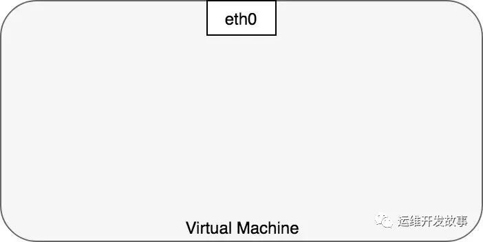
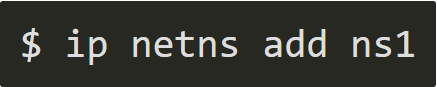
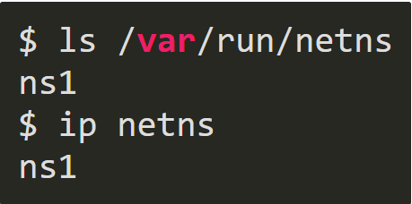
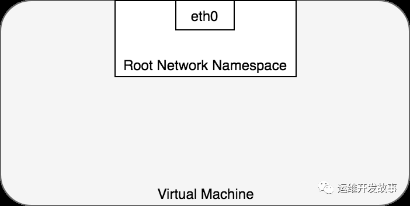
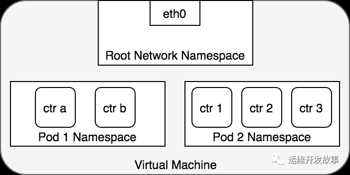
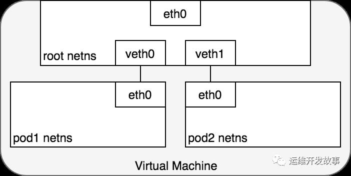
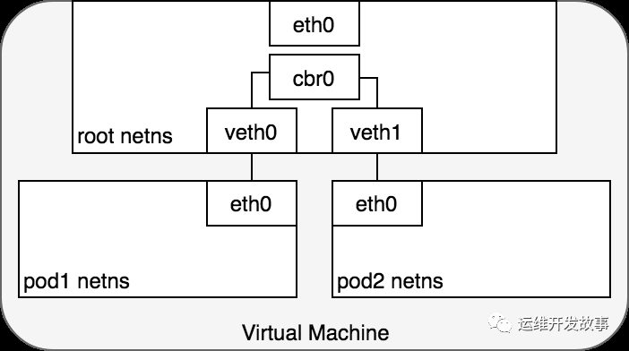
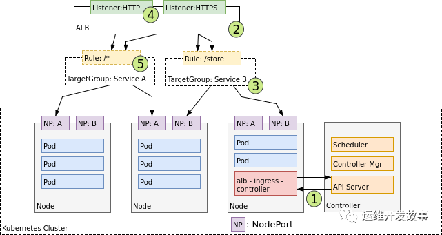

Kubernetes网络模型的基础知识
本文最后更新于：2022年7月22日 下午
Kubernetes 是为运行分布式集群而建立的，分布式系统的本质使得网络成为 Kubernetes 的核心和必要组成部分，了解 Kubernetes 网络模型可以使你能够正确运行、监控和排查应用程序故障。
网络所涉及的内容很多，拥有许多成熟的技术。对于不熟悉的人来说可能会非常痛苦，因为大多数人对网络都有先入为主的观念，并且有很多新旧概念需要理解并组合成一个连贯的整体。所说的网络可能包括网络命名空间、虚拟接口、IP 转发和网络地址转换等技术。本指南旨在通过讨论每种 Kubernetes 相关技术以及如何使用这些技术来启用 Kubernetes 网络模型的描述来揭开 Kubernetes 网络的神秘面纱。
本指南相当长，分为几个部分。我们首先讨论一些基本的 Kubernetes 术语，以确保在整个指南中正确使用术语，然后讨论 Kubernetes 网络模型以及它强加的设计和实施决策。接下来是本指南中最长且最有趣的部分：
深入讨论如何使用几个不同的用例展示在Kubernetes内是如何进行通信的。
文章大纲如下：
1、Kubernetes基础知识
Kubernetes 由几个核心概念构建而成，这些概念组合成越来越强大的功能。本节列出了这些概念中的每一个，并提供了一个简短的概述，以帮助促进讨论。Kubernetes 的内容远不止此，这里仅仅简要阐述一些基础知识。如果您已经熟悉 Kubernetes，请随意跳过本节。
1.1、Kubernetes API server
在 Kubernetes 中，一切都是由 Kubernetes API 服务器（kube-apiserver）提供的 API 调用。API 服务器是 etcd 数据存储的网关，它维护应用程序集群的所需状态。要更新 Kubernetes 集群的状态，您可以对描述所需状态的 API 服务器进行 API 调用。
1.2、Controllers
控制器是用于构建 Kubernetes 的核心抽象。一旦您使用 API 服务器声明了集群的所需状态，控制器就会通过持续观察 API 服务器的状态并对任何更改做出反应来确保集群的当前状态与所需状态相匹配。控制器内部实现了一个循环，该循环不断检查集群的当前状态与集群的期望状态。如果有任何差异，控制器将执行任务以使当前状态与所需状态匹配。在伪代码中：

例如，当您使用 API 服务器创建新 Pod 时，Kubernetes 调度程序（控制器）会注意到更改并决定将 Pod 放置在集群中的哪个位置。然后它使用 API 服务器（由 etcd 支持）写入状态更改。kubelet（一个控制器）然后会注意到新的变化并设置所需的网络功能以使 Pod 在集群内可访问。在这里，两个独立的控制器对两个独立的状态变化做出反应，以使集群的现实与用户的意图相匹配。
1.3、Pods
Pod 是 Kubernetes 的原子——用于构建应用程序的最小可部署对象。单个 Pod 代表集群中正在运行的工作负载，并封装了一个或多个 Docker 容器、任何所需的存储和唯一的 IP 地址，组成 pod 的容器被设计为在同一台机器上共同定位和调度。
1.4、Nodes
节点是运行 Kubernetes 集群的机器。这些可以是裸机、虚拟机或其他任何东西。主机一词通常与节点互换使用。我将尝试一致地使用术语节点，但有时会根据上下文使用虚拟机这个词来指代节点。
2、Kubernetes网络模型
Kubernetes 对 Pod 的联网方式做出了自以为是的选择。特别是，Kubernetes 对任何网络实现都规定了以下要求：
- 所有 Pod 都可以在不使用网络地址转换 (NAT) 的情况下与所有其他 Pod 通信。
- 所有节点都可以在没有 NAT 的情况下与所有 Pod 通信。
- Pod 认为自己的 IP 与其他人认为的 IP 相同。
鉴于这些限制，我们需要解决四个不同的网络问题：
- 容器到容器网络
- Pod 到 Pod 网络
- Pod 到服务网络
- Internet 到服务网络
本指南的其余部分将讨论这些问题中的每一个 以及他们的解决方案。
3、容器和容器之间网络通信
通常，我们将虚拟机中的网络通信视为直接与以太网设备交互，如图 1 所示。

实际上，情况比这更微妙。在 Linux 中，每个正在运行的进程都在一个网络命名空间内进行通信，该命名空间为逻辑网络堆栈提供了自己的路由、防火墙规则和网络设备。本质上，网络命名空间为命名空间内的所有进程提供了一个全新的网络堆栈。作为 Linux 用户，可以使用 ip 命令创建网络命名空间。例如，以下命令将创建一个名为 ns1 的新网络命名空间。

创建命名空间时，会在 /var/run/netns 下为其创建一个挂载点，即使没有附加任何进程，命名空间也可以保留。
您可以通过列出 /var/run/netns 下的所有挂载点或使用 ip 命令来列出可用的命名空间。

默认情况下，Linux 将每个进程分配给根网络命名空间以提供对外部世界的访问，如图 2 所示。

就 Docker 结构而言，Pod 被建模为一组共享网络命名空间的 Docker 容器。Pod 中的容器都具有相同的 IP 地址和端口空间，这些 IP 地址和端口空间是通过分配给 Pod 的网络命名空间分配的，并且可以通过 localhost 找到彼此，因为它们位于同一个命名空间中。我们可以为虚拟机上的每个 Pod 创建一个网络命名空间。这是使用 Docker 作为“Pod 容器”实现的，它保持网络命名空间打开，而“应用容器”（用户指定的东西）通过 Docker 的 –net=container: 函数加入该命名空间。图 3 显示了每个 Pod 如何由共享命名空间内的多个 Docker 容器 (ctr*) 组成。

Pod 中的应用程序还可以访问共享卷，这些卷被定义为 Pod 的一部分，并且可以挂载到每个应用程序的文件系统中。
4、Pod和Pod之间网络通信
在 Kubernetes 中，每个 Pod 都有一个真实的 IP 地址，并且每个 Pod 都使用该 IP 地址与其他 Pod 通信。现在任务是了解 Kubernetes 如何使用真实 IP 实现 Pod 到 Pod 的通信，无论 Pod 部署在集群中的同一个物理节点还是不同的节点上。我们通过考虑驻留在同一台机器上的 Pod 来开始这个讨论，以避免通过内部网络跨节点通信的复杂性。
从 Pod 的角度来看，它存在于自己的以太网命名空间中，需要与同一节点上的其他网络命名空间进行通信。值得庆幸的是，可以使用 Linux 虚拟以太网设备或由两个虚拟接口组成的 veth 对连接命名空间，这些虚拟接口可以分布在多个命名空间上。要连接 Pod 命名空间，我们可以将 veth 对的一侧分配给根网络命名空间，将另一侧分配给 Pod 的网络命名空间。每对 veth 对的工作方式就像一根跳线，连接两侧并允许流量在它们之间流动。这个设置可以复制到机器上的尽可能多的 Pod。图 4 显示了将 VM 上的每个 Pod 连接到根命名空间的 veth 对。

此时，我们已将 Pod 设置为每个都有自己的网络命名空间，以便它们相信自己拥有自己的以太网设备和 IP 地址，并且它们连接到节点的根命名空间。现在，我们希望 Pod 通过根命名空间相互通信，为此我们使用网桥。
Linux 以太网网桥是一个虚拟的第 2 层网络设备，用于联合两个或多个网段，透明地工作以将两个网络连接在一起。网桥通过检查通过它的数据包的目的地并决定是否将数据包传递到连接到网桥的其他网段来维护源和目标之间的转发表来运行。桥接代码通过查看网络中每个以太网设备的唯一 MAC 地址来决定是桥接数据还是丢弃数据。
网桥实现 ARP 协议以发现与给定 IP 地址关联的链路层 MAC 地址。当网桥接收到数据帧时，网桥将帧广播到所有连接的设备（原始发送者除外），响应该帧的设备存储在查找表中。具有相同 IP 地址的未来流量使用查找表来发现将数据包转发到的正确 MAC 地址。

图5. 使用桥接连接网络
4.1、同节点Pod通信
给定将每个 Pod 与自己的网络堆栈隔离的网络命名空间、将每个命名空间连接到根命名空间的虚拟以太网设备以及将命名空间连接在一起的网桥，我们终于准备好在同一节点上的 Pod 之间进行通信。这如图 6 所示。
在图 6 中，Pod 1 将数据包发送到它自己的以太网设备 eth0，该设备可用作 Pod 的默认设备。对于 Pod 1，eth0 通过虚拟以太网设备连接到根命名空间 veth0 (1)。网桥 cbr0 配置有 veth0 连接到它的网段。一旦数据包到达网桥，网桥会解析正确的网段以使用 ARP 协议将数据包发送到 veth1 (3)。当数据包到达虚拟设备 veth1 时，它被直接转发到 Pod 2 的命名空间和该命名空间内的 eth0 设备 (4)。在整个流量流中，每个 Pod 仅与 localhost 上的 eth0 通信，并且流量被路由到正确的 Pod。使用网络的开发体验是开发人员所期望的默认行为。
Kubernetes 的网络模型规定 Pod 必须可以通过其 IP 地址跨节点访问。也就是说，一个 Pod 的 IP 地址始终对网络中的其他 Pod 可见，每个 Pod 看待自己的 IP 地址的方式与其他 Pod 看待它的方式相同。我们现在转向不同节点上的 Pod 之间如何进行通信的问题。
4.2、跨节点Pod通信
在研究了如何在同一节点上的 Pod 之间如何进行通信之后，我们继续研究在不同节点上的 Pod 如何进行通信。Kubernetes 网络模型要求 Pod IP 可以通过网络访问，但它没有指定必须如何完成。
通常，集群中的每个节点都分配有一个 CIDR 块，指定该节点上运行的 Pod 可用的 IP 地址。一旦流向 CIDR 块的流量到达节点，节点就有责任将流量转发到正确的 Pod。图 7 说明了两个节点之间的流量流，假设网络可以将 CIDR 块中的流量路由到正确的节点。
图 7 以与图 6 相同的请求开始，但这次，目标 Pod（以绿色突出显示）与源 Pod（以蓝色突出显示）位于不同的节点上。数据包首先通过 Pod 1 的以太网设备发送，该设备与根命名空间 (1) 中的虚拟以太网设备配对。最终，数据包最终到达根命名空间的网桥 (2)。ARP 将在网桥上失败，因为没有设备连接到网桥并具有正确的数据包 MAC 地址。失败时，网桥将数据包发送到默认路由——根命名空间的 eth0 设备。此时路由离开节点并进入网络 (3)。我们现在假设网络可以根据分配给节点的 CIDR 块将数据包路由到正确的节点 (4)。数据包进入目标节点的根命名空间（VM 2 上的 eth0），在那里它通过网桥路由到正确的虚拟以太网设备 (5)。最后，路由通过位于 Pod 4 的命名空间 (6) 中的虚拟以太网设备对来完成。一般来说，每个节点都知道如何将数据包传递给在其中运行的 Pod。一旦数据包到达目标节点，数据包的流动方式与在同一节点上的 Pod 之间路由流量的方式相同。
我们轻松地避开了如何配置网络以将 Pod IP 的流量转发到负责这些 IP 的正确节点。这是特定于网络的，但查看特定示例将提供对所涉及问题的一些见解。例如，借助 AWS，Amazon 为 Kubernetes 维护了一个容器网络插件，允许节点到节点网络使用 [容器网络接口 (CNI) 插件] (https://github.com/aws/amazon) 在 Amazon VPC 环境中运行-vpc-cni-k8s）。
容器网络接口 (CNI) 提供了一个通用 API，用于将容器连接到外部网络。作为开发人员，我们想知道 Pod 可以使用 IP 地址与网络通信，并且我们希望此操作的机制是透明的。AWS 开发的 CNI 插件试图满足这些需求，同时通过 AWS 提供的现有 VPC、IAM 和安全组功能提供安全和可管理的环境，解决方案是使用弹性网络接口。
在 EC2 中，每个实例都绑定到一个弹性网络接口 (ENI)，并且所有 ENI 都连接在一个 VPC 内——ENI 无需额外努力即可相互访问。默认情况下，每个 EC2 实例部署一个 ENI，但您可以自由创建多个 ENI 并将它们部署到您认为合适的 EC2 实例。适用于 Kubernetes 的 AWS CNI 插件通过为部署到节点的每个 Pod 创建一个新的 ENI 来利用这种灵活性。因为 VPC 中的 ENI 已经连接到现有 AWS 基础设施中，所以这允许每个 Pod 的 IP 地址在 VPC 中本地可寻址。当 CNI 插件部署到集群时，每个节点（EC2 实例）都会创建多个弹性网络接口并为这些实例分配 IP 地址，从而为每个节点形成一个 CIDR 块。部署 Pod 时，作为 DaemonSet 部署到 Kubernetes 集群的小型二进制文件会从 Nodes 本地 kubelet 进程接收任何将 Pod 添加到网络的请求。这个二进制文件从节点的可用 ENI 池中选择一个可用的 IP 地址，并通过在 Linux 内核中连接虚拟以太网设备和网桥将其分配给 Pod，如在同一节点内联网 Pod 时所述。有了这个，Pod 流量就可以跨集群内的节点路由。
5、Pod和Service之间网络通信
我们已经展示了如何在 Pod 及其关联的 IP 地址之间路由转发。在我们需要应对变化之前，这很有效。Pod IP 地址不是持久的，并且会随着扩展或缩减、应用程序崩溃或节点重启而出现和消失。这些事件中的每一个都可以使 Pod IP 地址在没有警告的情况下更改。Service被内置到 Kubernetes 中来解决这个问题。
Kubernetes Service 管理一组 Pod 的状态，允许您跟踪一组随时间动态变化的 Pod IP 地址。Service充当对 Pod 的抽象，并将单个虚拟 IP 地址分配给一组 Pod IP 地址。任何发往 Service 虚拟 IP 的流量都将被转发到与虚拟 IP 关联的 Pod 集。这允许与 Service 关联的 Pod 集随时更改——客户端只需要知道 Service 的虚拟 IP即可，它不会更改。
创建新的 Kubernetes Service时，会为您创建一个新的虚拟 IP（也称为集群 IP）。在集群中的任何地方，发往虚拟 IP 的流量都将负载均衡到与服务关联的一组支持 Pod。实际上，Kubernetes 会自动创建并维护一个分布式集群内负载均衡器，将流量分配到服务相关联的健康 Pod。让我们仔细看看它是如何工作的。
5.1、netfilter 和 iptables
为了在集群中执行负载平衡，Kubernetes 依赖于 Linux 内置的网络框架——netfilter。Netfilter 是 Linux 提供的一个框架，它允许以自定义处理程序的形式实现各种与网络相关的操作。Netfilter 为数据包过滤、网络地址转换和端口转换提供了各种功能和操作，它们提供了引导数据包通过网络所需的功能，以及提供禁止数据包到达计算机网络中敏感位置的能力。
iptables 是一个用户空间程序，它提供了一个基于表的系统，用于定义使用 netfilter 框架操作和转换数据包的规则。在 Kubernetes 中，iptables 规则由 kube-proxy 控制器配置，该控制器监视 Kubernetes API 服务器的更改。当对 Service 或 Pod 的更改更新 Service 的虚拟 IP 地址或 Pod 的 IP 地址时，iptables 规则会更新以正确地将指向 Service 的流量转发到正确的Pod。iptables 规则监视发往 Service 的虚拟 IP 的流量，并且在匹配时，从可用 Pod 集中选择一个随机 Pod IP 地址，并且 iptables 规则将数据包的目标 IP 地址从 Service 的虚拟 IP 更改为选定的 Pod。当 Pod 启动或关闭时，iptables 规则集会更新以反映集群不断变化的状态。换句话说，iptables 已经在机器上进行了负载平衡，以将定向到服务 IP 的流量转移到实际 pod 的 IP。
在返回路径上，IP 地址来自目标 Pod。在这种情况下，iptables 再次重写 IP 标头以将 Pod IP 替换为 Service 的 IP，以便 Pod 认为它一直只与 Service 的 IP 通信。
5.2、IPVS
Kubernetes 的最新版本 (1.11) 包括用于集群内负载平衡的第二个选项：IPVS。IPVS（IP 虚拟服务器）也构建在 netfilter 之上，并将传输层负载平衡作为 Linux 内核的一部分实现。IPVS 被合并到 LVS（Linux 虚拟服务器）中，它在主机上运行并充当真实服务器集群前面的负载平衡器。IPVS 可以将基于 TCP 和 UDP 的服务的请求定向到真实服务器，并使真实服务器的服务在单个 IP 地址上表现为虚拟服务。这使得 IPVS 非常适合 Kubernetes 服务。
声明 Kubernetes Service时，您可以指定是否希望使用 iptables 或 IPVS 完成集群内负载平衡。IPVS 专为负载平衡而设计，并使用更高效的数据结构（哈希表），与 iptables 相比允许几乎无限的规模。在使用 IPVS 创建负载均衡的 Service 时，会发生三件事：在 Node 上创建一个虚拟 IPVS 接口，将 Service 的 IP 地址绑定到虚拟 IPVS 接口，并为每个 Service IP 地址创建 IPVS 服务器。
未来，IPVS 有望成为集群内负载均衡的默认方法。此更改仅影响集群内负载平衡，并且在本指南的其余部分中，您可以安全地将 iptables 替换为 IPVS 以实现集群内负载平衡，而不会影响其余讨论。现在让我们看看通过集群内负载平衡服务的数据包的生命周期。
5.3、Pod和Service通信

在 Pod 和 Service 之间路由数据包时，与以前相同的方式开始。数据包首先通过连接到 Pod 的网络命名空间 (1) 的 eth0 接口离开 Pod。然后它通过虚拟以太网设备到达网桥 (2)。网桥上运行的 ARP 协议不知道 Service，因此它通过默认路由 eth0 (3) 将数据包传输出去。在这里，发生了一些不同的事情。在 eth0 接受之前，数据包会通过 iptables 过滤。iptables 收到数据包后，使用 kube-proxy 安装在 Node 上的规则响应 Service 或 Pod 事件，将数据包的目的地从 Service IP 重写为特定的 Pod IP（4）。数据包现在注定要到达 Pod 4，而不是服务的虚拟 IP。iptables 利用 Linux 内核的 conntrack 实用程序来记住所做的 Pod 选择，以便将来的流量路由到同一个 Pod（除非发生任何扩展事件）。本质上，iptables 直接在 Node 上做了集群内负载均衡。然后流量使用我们已经检查过的 Pod 到 Pod 路由流向 Pod (5)。
5.4、Service和Pod通信

收到此数据包的 Pod 将响应，将源 IP 识别为自己的 IP，将目标 IP 识别为最初发送数据包的 Pod (1)。进入节点后，数据包流经 iptables，它使用 conntrack 记住它之前所做的选择，并将数据包的源重写为服务的 IP 而不是 Pod 的 IP (2)。从这里开始，数据包通过网桥流向与 Pod 的命名空间配对的虚拟以太网设备 (3)，然后流向我们之前看到的 Pod 的以太网设备 (4)。
5.5、使用DNS
Kubernetes 可以选择使用 DNS 来避免将服务的集群 IP 地址硬编码到您的应用程序中。Kubernetes DNS 作为在集群上调度的常规 Kubernetes 服务运行。它配置在每个节点上运行的 kubelet，以便容器使用 DNS 服务的 IP 来解析 DNS 名称。集群中定义的每个服务（包括 DNS 服务器本身）都被分配了一个 DNS 名称。DNS 记录将 DNS 名称解析为服务的集群 IP 或 POD 的 IP，具体取决于您的需要。SRV 记录用于指定运行服务的特定命名端口。
DNS Pod 由三个独立的容器组成：
- kubedns：监视 Kubernetes 主服务器的服务和端点变化，并维护内存中的查找结构以服务 DNS 请求。
- dnsmasq：添加 DNS 缓存以提高性能。
- sidecar：提供一个单一的健康检查端点来执行 dnsmasq 和 kubedns 的健康检查。
DNS Pod 本身作为 Kubernetes 服务公开，具有静态集群 IP，该 IP 在启动时传递给每个正在运行的容器，以便每个容器都可以解析 DNS 条目。DNS 条目通过维护内存中 DNS 表示的 kubedns 系统解析。etcd 是集群状态的后端存储系统，kubedns 使用一个库将 etcd 键值存储转换为 DNS 整体，以便在必要时重建内存中 DNS 查找结构的状态。
CoreDNS 与 kubedns 的工作方式类似，但使用插件架构构建，使其更加灵活。从 Kubernetes 1.11 开始，CoreDNS 是 Kubernetes 的默认 DNS 实现。
6、Internet和Service之间网络通信
到目前为止，我们已经了解了 Kubernetes 集群内的流量是如何转发的。这一切都很好，但不幸的是，将您的应用程序与外界隔离无助于实现任何销售目标——在某些时候，您可能希望将您的服务暴露给外部流量。这种需求突出了两个相关的问题：
- 1）从 Kubernetes 服务获取流量到 Internet。
- 2）从 Internet 获取流量到您的 Kubernetes 服务。
6.1、Egress-将Kubernetes流量转发到Internet
从节点到公共 Internet 的流量转发是特定于网络的，并且实际上取决于您的网络如何配置以发布流量。为了使本节更加具体，我将使用 AWS VPC 来讨论任何具体细节。
在 AWS 中，Kubernetes 集群在 VPC 中运行，其中每个节点都分配有一个私有 IP 地址，该地址可从 Kubernetes 集群内访问。要从集群外部访问流量，您需要将 Internet 网关连接到您的 VPC。Internet 网关有两个用途：在您的 VPC 路由表中为可路由到 Internet 的流量提供目标，以及为已分配公共 IP 地址的任何实例执行网络地址转换 (NAT)。NAT 转换负责将集群专用的节点内部 IP 地址更改为公共 Internet 中可用的外部 IP 地址。
有了 Internet 网关，VM 就可以自由地将流量路由到 Internet。不幸的是，有一个小问题。Pod 有自己的 IP 地址，与托管 Pod 的节点的 IP 地址不同，并且 Internet 网关的 NAT 转换仅适用于 VM IP 地址，因为它不知道 Pod 正在运行什么哪些虚拟机——网关不支持容器。让我们看看 Kubernetes 如何使用 iptables 解决这个问题（再次）。
6.1.1、Node和Internet通信
在下图中，数据包源自 Pod 的命名空间 (1)，并经过连接到根命名空间 (2) 的 veth 对。一旦进入根命名空间，数据包就会从网桥移动到默认设备，因为数据包上的 IP 与连接到网桥的任何网段都不匹配。在到达根命名空间的以太网设备 (3) 之前，iptables 会破坏数据包 (3)。在这种情况下，数据包的源 IP 地址是 Pod，如果我们将源保留为 Pod，Internet 网关将拒绝它，因为网关 NAT 只了解连接到 VM 的 IP 地址。解决方案是让 iptables 执行源 NAT——更改数据包源——使数据包看起来来自 VM 而不是 Pod。有了正确的源 IP，数据包现在可以离开 VM (4) 并到达 Internet 网关 (5)。Internet 网关将执行另一个 NAT，将源 IP 从 VM 内部 IP 重写为外部 IP。最后，数据包将到达公共 Internet (6)。在返回的路上，数据包遵循相同的路径，并且任何源 IP 修改都被撤消，以便系统的每一层都接收到它理解的 IP 地址：节点或 VM 级别的 VM 内部，以及 Pod 内的 Pod IP命名空间。
6.2、Ingress-将Internet流量转发到Kubernetes
入口——让流量进入你的集群——是一个非常难以解决的问题。同样，这是特定于您正在运行的网络的，但一般来说，Ingress 分为两种解决方案，适用于网络堆栈的不同部分：(
- 服务负载平衡器和
借助 AWS，负载均衡器可以了解其目标组中的节点，并将平衡集群中所有节点的流量。一旦流量到达一个节点，之前为您的服务在整个集群中安装的 iptables 规则将确保流量到达您感兴趣的服务的 Pod。
6.2.2、Loadbalancer和Service通信
让我们看看这在实践中是如何工作的。部署服务后，您正在使用的云提供商将为您创建一个新的负载均衡器 (1)。因为负载均衡器不支持容器，所以一旦流量到达负载均衡器，它就会分布在组成集群的所有虚拟机中 (2)。每个 VM 上的 iptables 规则会将来自负载均衡器的传入流量引导到正确的 Pod (3) — 这些是在服务创建期间实施并在前面讨论过的相同 IP 表规则。Pod 到客户端的响应将返回 Pod 的 IP，但客户端需要有负载均衡器的 IP 地址。正如我们之前看到的，iptables 和 conntrack 用于在返回路径上正确重写 IP。
下图显示了托管 Pod 的三个 VM 前面的网络负载均衡器。传入流量 (1) 指向您的服务的负载均衡器。一旦负载均衡器收到数据包 (2)，它就会随机选择一个 VM。在这种情况下，我们病态地选择了没有运行 Pod 的 VM：VM 2 (3)。在这里，运行在 VM 上的 iptables 规则将使用 kube-proxy 安装到集群中的内部负载平衡规则将数据包定向到正确的 Pod。iptables 执行正确的 NAT 并将数据包转发到正确的 Pod (4)。
6.2.3、七层转发-Ingress Controller
第 7 层网络 Ingress 在网络堆栈的 HTTP/HTTPS 协议范围内运行，并构建在 Services 之上。启用 Ingress 的第一步是使用 Kubernetes 中的 NodePort 服务类型在您的服务上打开一个端口。如果将 Service 的 type 字段设置为 NodePort，Kubernetes master 将从您指定的范围内分配一个端口，并且每个 Node 都会将该端口（每个 Node 上的相同端口号）代理到您的 Service 中。也就是说，任何指向节点端口的流量都将使用 iptables 规则转发到服务。这个 Service 到 Pod 的路由遵循我们在将流量从 Service 路由到 Pod 时已经讨论过的相同的内部集群负载平衡模式。
要向 Internet 公开节点的端口，您需要使用 Ingress 对象。Ingress 是一个更高级别的 HTTP 负载均衡器，它将 HTTP 请求映射到 Kubernetes 服务。Ingress 方法将根据 Kubernetes 云提供商控制器的实现方式而有所不同。HTTP 负载均衡器，如第 4 层网络负载均衡器，仅了解节点 IP（而不是 Pod IP），因此流量路由同样利用由 kube-proxy 安装在每个节点上的 iptables 规则提供的内部负载均衡。
在 AWS 环境中，ALB 入口控制器使用 Amazon 的第 7 层应用程序负载均衡器提供 Kubernetes 入口。下图详细介绍了此控制器创建的 AWS 组件。它还演示了 Ingress 流量从 ALB 到 Kubernetes 集群的路由。

创建后，(1) Ingress Controller 监视来自 Kubernetes API 服务器的 Ingress 事件。当它找到满足其要求的 Ingress 资源时，它会开始创建 AWS 资源。AWS 将 Application Load Balancer (ALB) (2) 用于 Ingress 资源。负载均衡器与用于将请求路由到一个或多个注册节点的目标组一起工作。(3) 在 AWS 中为 Ingress 资源描述的每个唯一 Kubernetes 服务创建目标组。(4) Listener 是一个 ALB 进程，它使用您配置的协议和端口检查连接请求。侦听器由 Ingress 控制器为您的 Ingress 资源注释中详述的每个端口创建。最后，为 Ingress 资源中指定的每个路径创建目标组规则。这确保了到特定路径的流量被路由到正确的 Kubernetes 服务 (5)。
6.2.4、Ingress和Service通信
流经 Ingress 的数据包的生命周期与 LoadBalancer 的生命周期非常相似。主要区别在于 Ingress 知道 URL 的路径（允许并可以根据路径将流量路由到服务），并且 Ingress 和 Node 之间的初始连接是通过 Node 上为每个服务公开的端口。
让我们看看这在实践中是如何工作的。部署服务后，您正在使用的云提供商将为您创建一个新的 Ingress 负载均衡器 (1)。由于负载均衡器不支持容器，因此一旦流量到达负载均衡器，它就会通过为您的服务提供的广告端口分布在组成集群 (2) 的整个 VM 中。每个 VM 上的 iptables 规则会将来自负载均衡器的传入流量引导到正确的 Pod (3) — 正如我们之前所见。Pod 到客户端的响应将返回 Pod 的 IP，但客户端需要有负载均衡器的 IP 地址。正如我们之前看到的，iptables 和 conntrack 用于在返回路径上正确重写 IP。
第 7 层负载均衡器的一个好处是它们可以识别 HTTP，因此它们知道 URL 和路径。这使您可以按 URL 路径对服务流量进行分段。它们通常还在 HTTP 请求的 X-Forwarded-For 标头中提供原始客户端的 IP 地址。
7、总结
本指南为理解 Kubernetes 网络模型以及它如何支持常见的网络任务奠定了基础。网络领域既广泛又深入，不可能在这里涵盖所有内容。本指南应为您提供深入了解您感兴趣并想了解更多主题的起点。每当您遇到困难时，请利用 Kubernetes 文档和 Kubernetes 社区来帮助您找到自己的方式。
8、网络术语
Kubernetes 依赖于几种现有技术来构建一个正常运行的集群。全面探索这些技术中的每一个超出了本指南的范围，但本节将详细描述这些技术中的每一个，以便进行讨论。如果您感到困惑或需要复习，您可以随意略读本节，完全跳过它，或者根据需要参考它。
二层网络
第 2 层是提供节点到节点数据传输的数据链路层。它定义了在两个物理连接的设备之间建立和终止连接的协议。它还定义了它们之间的流量控制协议。
四层网络
传输层通过流量控制控制给定链路的可靠性。在 TCP/IP 中，这一层是指用于在不可靠网络上交换数据的 TCP 协议。
七层网络
应用层是最接近最终用户的层，这意味着应用层和用户都直接与软件应用程序交互。该层与实现通信组件的软件应用程序交互。通常，第 7 层网络是指 HTTP。
Nat网络地址转换
NAT 或网络地址转换是将一个地址空间重新映射到另一个地址空间的 IP 级别。映射通过在数据包通过流量路由设备传输时修改数据包的 IP 标头中的网络地址信息来实现。
基本 NAT 是从一个 IP 地址到另一个 IP 地址的简单映射。更常见的是，NAT 用于将多个私有 IP 地址映射到一个公开的 IP 地址。通常，本地网络使用私有 IP 地址空间，并且该网络上的路由器在该空间中被赋予私有地址。然后路由器使用公共 IP 地址连接到 Internet。当流量从本地网络传递到 Internet 时，每个数据包的源地址都从私有地址转换为公共地址，这使得请求看起来好像直接来自路由器。路由器维护连接跟踪，以将回复转发到本地网络上的正确专用 IP。
NAT 提供了一个额外的好处，即允许大型专用网络使用单个公共 IP 地址连接到 Internet，从而节省公共使用的 IP 地址的数量。
snat-源地址转换
SNAT 只是指修改 IP 数据包源地址的 NAT 过程。这是上述 NAT 的典型行为。
dnat-目标地址转换
DNAT 是指修改 IP 数据包的目的地址的 NAT 过程。DNAT 用于将位于专用网络中的服务发布到可公开寻址的 IP 地址。
网络名称空间
在网络中，每台机器（真实的或虚拟的）都有一个以太网设备（我们将其称为 eth0）。所有流入和流出机器的流量都与该设备相关联。事实上，Linux 将每个以太网设备与一个网络命名空间相关联——整个网络堆栈的逻辑副本，以及它自己的路由、防火墙规则和网络设备。最初，所有进程共享来自 init 进程的相同默认网络命名空间，称为根命名空间。默认情况下，进程从其父进程继承其网络命名空间，因此，如果您不进行任何更改，所有网络流量都会流经为根网络命名空间指定的以太网设备。
veth虚拟网卡对
计算机系统通常由一个或多个网络设备（eth0、eth1 等）组成，这些设备与负责将数据包放置到物理线路上的物理网络适配器相关联。Veth 设备是虚拟网络设备，始终以互连的对创建。它们可以充当网络命名空间之间的隧道，以创建到另一个命名空间中的物理网络设备的桥接，但也可以用作独立的网络设备。您可以将 veth 设备视为设备之间的虚拟跳线——一端连接的设备将连接另一端。
网络桥接
网桥是从多个通信网络或网段创建单个聚合网络的设备。桥接连接两个独立的网络，就好像它们是一个网络一样。桥接使用内部数据结构来记录每个数据包发送到的位置，以作为性能优化。
CIDR
CIDR 是一种分配 IP 地址和执行 IP 路由的方法。对于 CIDR，IP 地址由两组组成：网络前缀（标识整个网络或子网）和主机标识符（指定该网络或子网上的主机的特定接口）。CIDR 使用 CIDR 表示法表示 IP 地址，其中地址或路由前缀写有表示前缀位数的后缀，例如 IPv4 的 192.0.2.0/24。IP 地址是 CIDR 块的一部分，如果地址的初始 n 位和 CIDR 前缀相同，则称其属于 CIDR 块。
CNI
CNI（容器网络接口）是一个云原生计算基金会项目，由规范和库组成，用于编写插件以在 Linux 容器中配置网络接口。CNI 只关心容器的网络连接以及在容器被删除时移除分配的资源。
VIP地址
虚拟 IP 地址或 VIP 是软件定义的 IP 地址，与实际的物理网络接口不对应。
netfilter
netfilter 是 Linux 中的包过滤框架。实现此框架的软件负责数据包过滤、网络地址转换 (NAT) 和其他数据包处理。
netfilter、ip_tables、连接跟踪（ip_conntrack、nf_conntrack）和NAT子系统共同构建了框架的主要部分。
iptables
iptables 是一个允许 Linux 系统管理员配置 netfilter 及其存储的链和规则的程序。IP 表中的每条规则都由许多分类器（iptables 匹配）和一个连接的操作（iptables 目标）组成。
conntrack
conntrack 是建立在 Netfilter 框架之上的用于处理连接跟踪的工具。连接跟踪允许内核跟踪所有逻辑网络连接或会话，并将每个连接或会话的数据包定向到正确的发送者或接收者。NAT 依靠此信息以相同的方式翻译所有相关数据包，并且 iptables 可以使用此信息充当状态防火墙。
IPVS
IPVS 将传输层负载平衡作为 Linux 内核的一部分来实现。
IPVS 是一个类似于 iptables 的工具。它基于 Linux 内核的 netfilter 钩子函数，但使用哈希表作为底层数据结构。这意味着，与 iptables 相比，IPVS 重定向流量更快，在同步代理规则时具有更好的性能，并提供更多的负载平衡算法。
DNS
域名系统 (DNS) 是一个分散的命名系统，用于将系统名称与 IP 地址相关联。它将域名转换为用于定位计算机服务的数字 IP 地址。